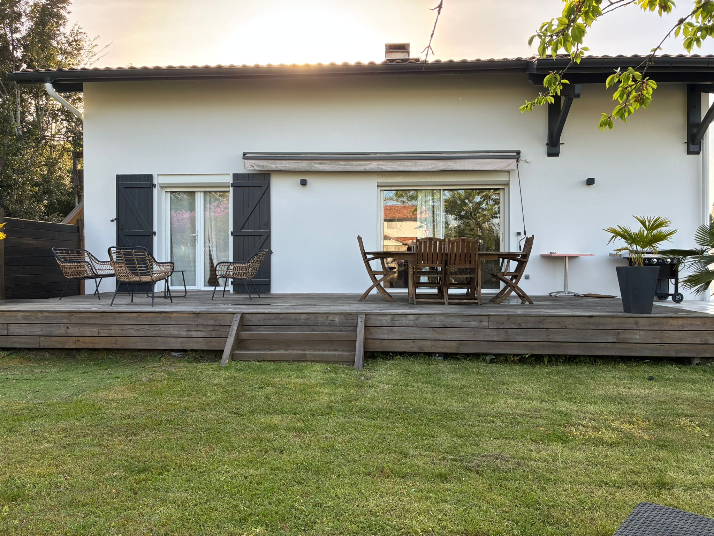
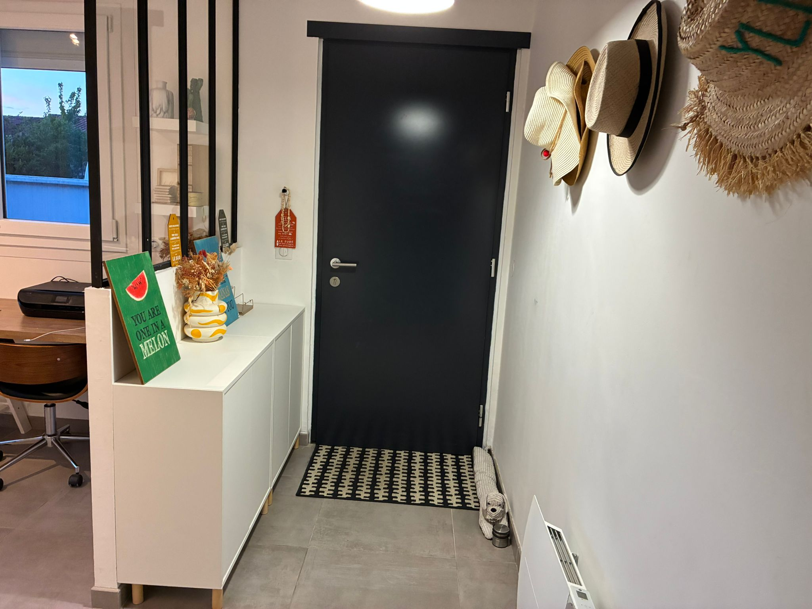
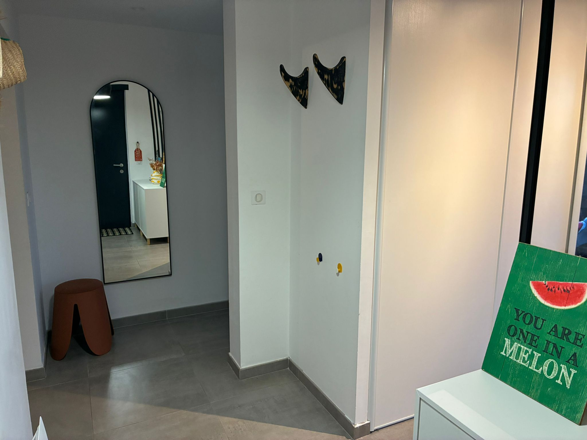
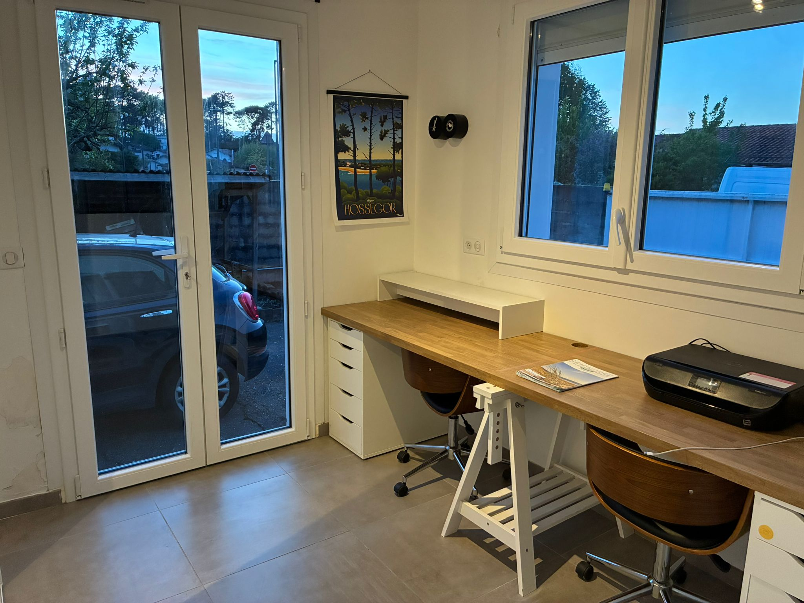
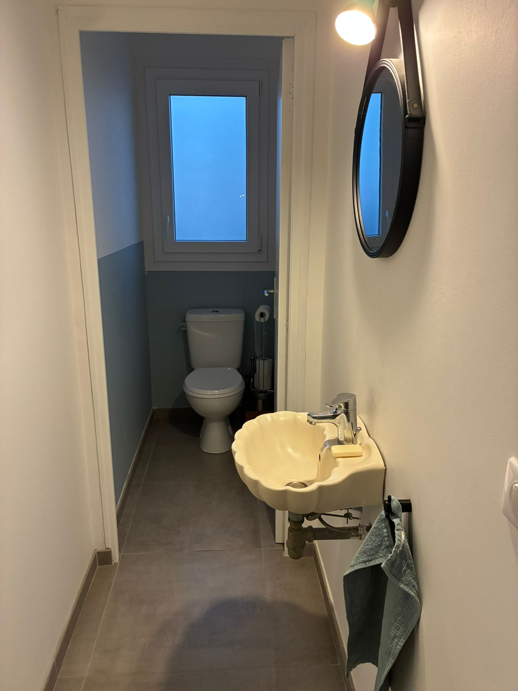

3 chambres climatisées
Trois chambres équipées de la climatisation pour des nuits fraîches, même en plein été landais. 5 couchages, jusqu'à 6 personnes.
Seignosse bourg · Landes (40510)
Uhaïna House — 130 m² rénovés avec soin, 3 chambres climatisées, une terrasse de 60 m² et les plages de Seignosse à 5 minutes. Une maison de famille à louer pour vos vacances dans les Landes.
La maison
Nous avons racheté Uhaïna House en 2018 et l'avons entièrement rénovée une première fois. Avec l'arrivée de notre enfant, nous l'avons agrandie pour y vivre et la partager : 130 m² aujourd'hui, trois chambres climatisées, deux salles de bain, et un séjour de 50 m² qui respire.
Située en plein bourg de Seignosse (40510, Landes), la maison combine le calme d'un quartier résidentiel et la praticité d'être à pied des commerces, du marché et des restaurants. Les plages de Seignosse sont à 5 minutes en voiture, Hossegor à 10, Capbreton à 15.
Ici, on cuisine ensemble, on mange dehors, on rentre de la plage sable aux pieds, on s'assoit sur la terrasse quand le soleil décline. C'est notre maison — et le temps d'une location, elle devient la vôtre.
Équipements
Trois chambres équipées de la climatisation pour des nuits fraîches, même en plein été landais. 5 couchages, jusqu'à 6 personnes.
Deux salles de bain complètes + un WC séparé : plus d'attente le matin, plus d'espace pour chacun.
Un grand volume lumineux avec cuisine entièrement équipée (four, plaques, lave-vaisselle, frigo américain) et coin repas.
Grande terrasse extérieure pour les petits-déjeuners au soleil et les dîners qui s'étirent. Salon de jardin, plancha.
Internet fibre et coin bureau équipé pour télétravailler face aux pins, si l'envie vous prend.
Stationnement sur place. Et le bourg se fait aussi très bien à vélo ou à pied.
Lave-linge et sèche-linge à disposition — pratique pour les familles et les séjours longs.
Commerces, marché, restaurants et boulangerie à 5 minutes à pied. Très agréable en semaine comme en week-end.
Les Bourdaines, Les Estagnots, Le Penon : toutes les plages de Seignosse à moins de 10 min en voiture.
Photos
Un aperçu de Uhaïna House, notre maison de vacances à Seignosse. L'annonce Airbnb contient la galerie complète avec toutes les pièces.





Seignosse
Seignosse, dans les Landes (40510), c'est l'un des plus beaux spots de la côte atlantique : des plages de sable fin à perte de vue, la forêt de pins qui sent la résine, les lacs pour les après-midi plus calmes, et un bourg vivant où il fait bon se poser.
Entre Hossegor au sud et Vieux-Boucau au nord, Seignosse est un haut lieu du surf mondial (compétitions Quiksilver Pro France, écoles de surf reconnues) tout en gardant l'esprit village des Landes.
Accès
Sortie Saint-Geours-de-Maremne sur l'A63, puis direction Seignosse (~15 min). Parking privé sur place.
Gares TGV de Bayonne (30 min) ou Dax (30 min). Bus et taxi disponibles depuis les gares.
Aéroport Biarritz — Pays Basque à 45 minutes en voiture. Location de voiture sur place.
FAQ
Uhaïna House est située au cœur de Seignosse bourg (40510), dans les Landes. Les commerces, le marché et les restaurants sont accessibles à pied. Les plages de Seignosse (Les Bourdaines, Les Estagnots, Le Penon) sont à environ 5 minutes en voiture ou 10 minutes à vélo.
La maison de 130 m² dispose de 3 chambres climatisées et 5 couchages, pour accueillir jusqu'à 6 personnes confortablement. Idéal pour une famille ou un groupe d'amis.
La réservation se fait directement sur Airbnb, avec paiement sécurisé et accès à tous les avis des précédents voyageurs. Vous pouvez également nous contacter par email pour toute question avant de réserver.
Oui, les 3 chambres sont équipées de la climatisation, pour garantir des nuits fraîches même en plein été landais.
Oui, la maison dispose d'un stationnement privé. Le bourg de Seignosse reste également très accessible à vélo ou à pied.
Les plages de Seignosse — Les Bourdaines, Les Estagnots, Le Penon, Les Casernes et la plage des Chênes Lièges — sont toutes à 5 à 10 minutes en voiture. Hossegor (plage centrale, lac marin) est à 10 minutes, et Capbreton à 15.
Oui. Les gares SNCF les plus proches sont Bayonne (30 min) et Dax (30 min), bien desservies par les TGV. L'aéroport de Biarritz — Pays Basque se trouve à environ 45 minutes en voiture.
Oui. Uhaïna House est équipée d'un WiFi fibre et d'un coin bureau avec deux postes de travail — parfait pour alterner plage et télétravail.
Réserver
Les disponibilités et la réservation se font directement sur Airbnb, avec paiement sécurisé et tous les avis de nos précédents voyageurs.
Paiement sécurisé · Annulation selon conditions Airbnb · Propriétaires à l'écoute